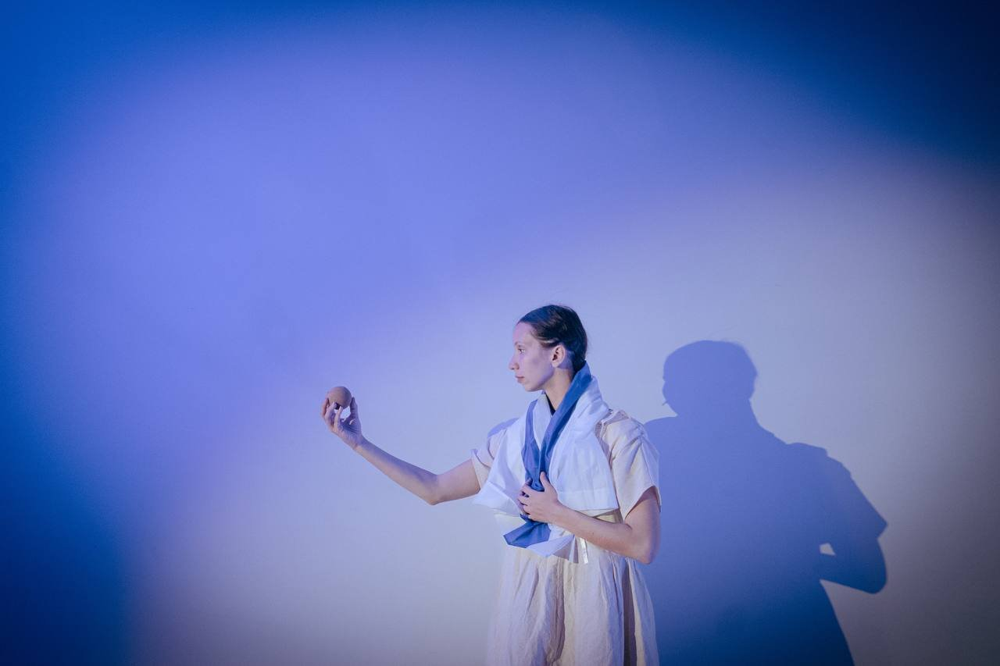
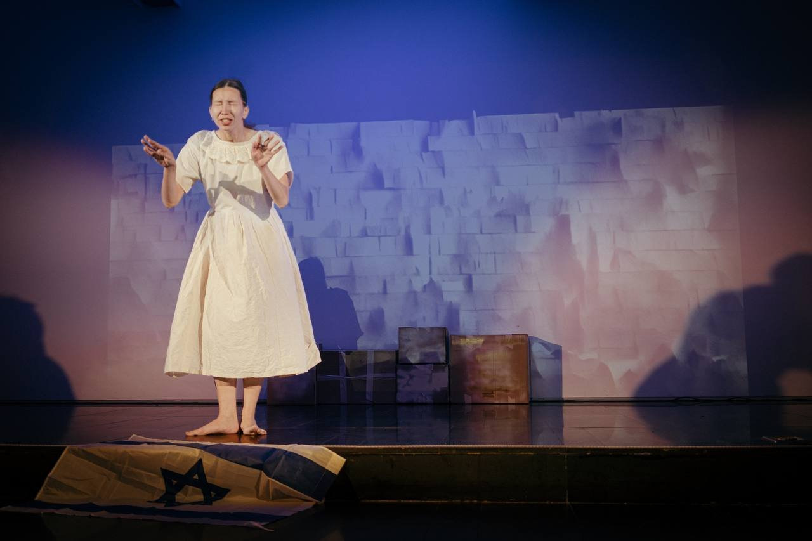
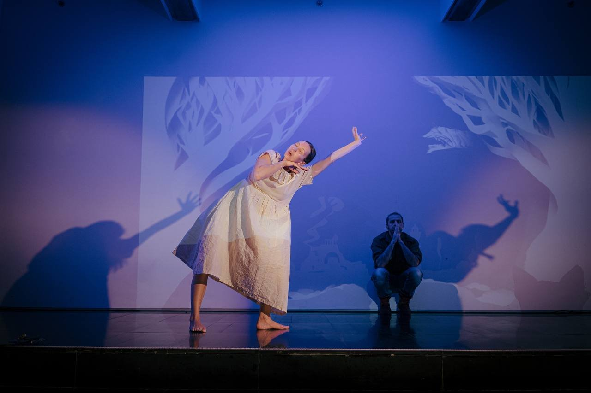
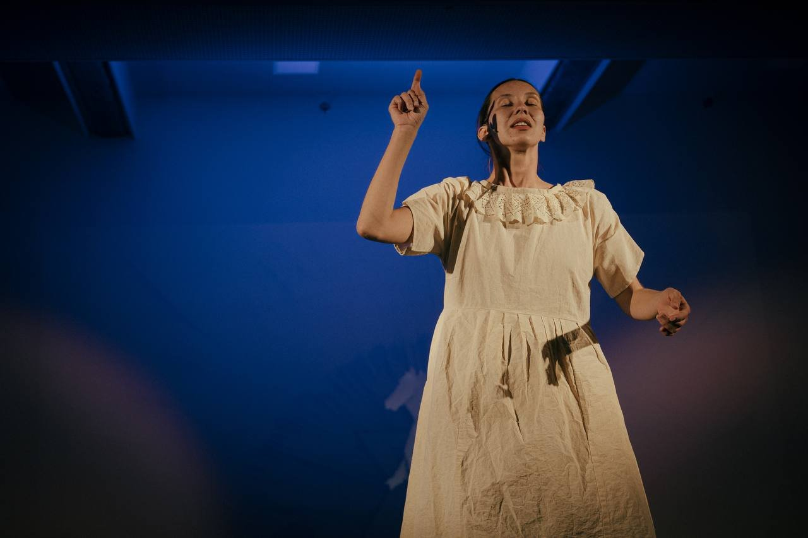
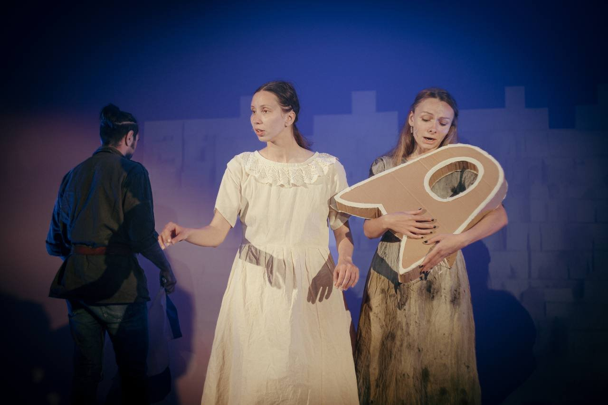
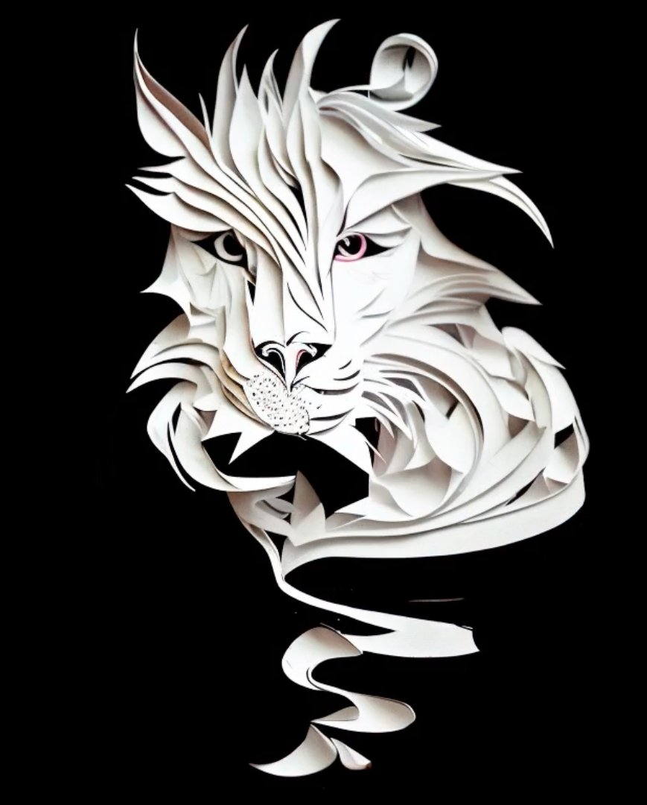
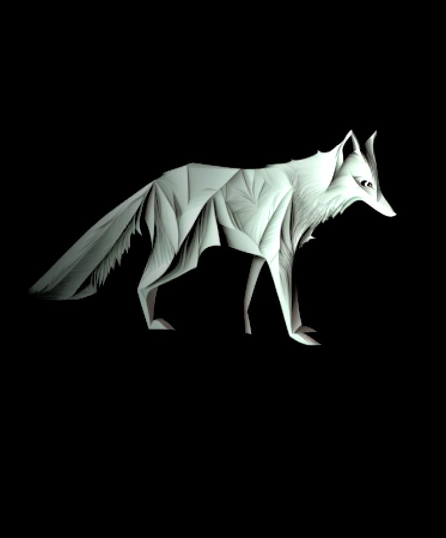

תקציר
משל מיתולוגי על ירושלים — מתוהו ובוהו הקדמון ועד ימינו. המופע מעיר את "נסיכת ירושלים" העתיקה, רוח העיר ששרדה כאוס, חורבן ותחייה. נרטיב חזותי־מוזיקלי שוזר עבר והווה, מציאות ופנטזיה, ומסריו פשוט ועז: לעולם אל תחדלו להאמין בנסים. מופע משפחתי במסגרת פסטיבל ספרי הילדים הלאומי.
צוות
- בימוי־שותף, וידאו ומולטימדיה: ניק דריידן
- הפקה: פסטיבל "במצעד" ואנו — מוזיאון העם היהודי
- בכורה: 25 במרץ 2023, אולם טיש, מוזיאון אנו
קונספט חזותי
קירות קוביים לבנים הפכו במיפוי הקרנה לנופים מתחלפים — מאבן השתייה ועד קו הרקיע הירושלמי של ימינו. פרסקאות עתיקות, אותיות עברית מונומנטליות ושמי כוכבים קמו לחיים סביב המבצעים; בפינאלה פרח על המסך אילן יוחסין עצום — סמל לחיבור בין הדורות. אותיות מעופפות, כתבי יד מתעוררים ורישומי קסם אפשרו לילדים לגעת בהיסטוריה המורכבת של העיר דרך פליאה ומשחק.
גלריה






